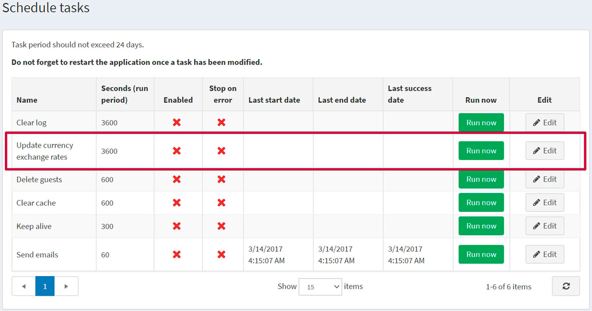
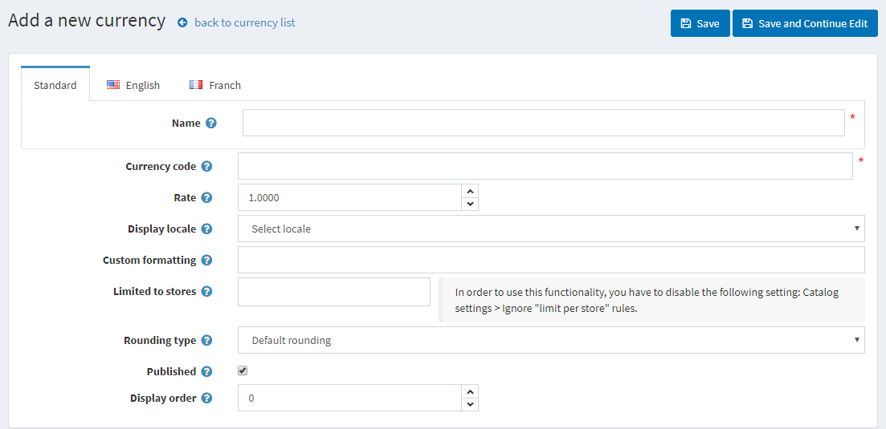
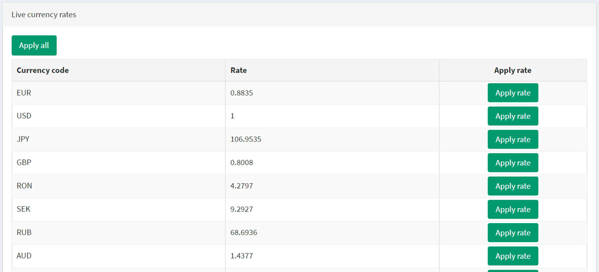

Currencies
In nopCommerce, the only primary store currency is used. The primary store currency is the currency against which all other allowed currencies will be configured. Although nopCommerce allows having multiple currencies for displaying your product prices, the primary currency is used for payment transactions with online payment gateways.
If you are using an online payment gateway (such as PayPal), the amount is sent to the payment gateway and will be the price you entered in primary store currency.
Primary store currency is only used by the store administrators. It is used for setting product prices and does not have to be the same as the published currencies.
If you only have one published currency, the store will display neither currency selector nor currency symbol with prices. If more than one currency is published, all prices will be marked with the currently selected currency. nopCommerce recommends removing any currency that is not required.
nopCommerce uses an exchange rate to calculate the amounts for published currencies. The exchange rate is entered when a currency is added or edited. Alternatively, you can use a real-time exchange rate service to calculate the amount, and the price of the product will be multiplied by the exchange rate provided.
Exchange rates fluctuate on a daily basis. Therefore, you can edit the exchange rate as often as you need to keep up to date. Actual transactions are only handled in your store's primary currency. On credit card transactions, banks will usually make exchanges automatically based on the most up-to-date currency values.
To define currency settings, go to Configuration → Currencies.

From the Current exchange rate provider dropdown list, select the exchange rate provider that will be used to get live rates.
Note
By default, there is only one exchange rate provider available in nopCommerce — ECB. To get live rates from ECB, you should select EUR as the primary exchange rate currency.
Select the Auto update enabled checkbox to enable receiving an automatic update of currency rates every hour.
Click Save.
Note
By default, all the currency rates are updated once per hour. You can change currency rates updating settings in System → Schedule tasks; choose Update currency exchange rates.

Add a new currency
Click the Add new button.

Define the currency settings:
- Currency Name.
- Currency code. For a list of currency codes, go to: https://en.wikipedia.org/wiki/ISO_4217
- Enter the exchange Rate against the primary exchange rate of the currency.
- From the Display locale dropdown list, select the display locale for currency values.
- Enter Custom formatting to be applied to the currency values. In this field, you can specify any symbols for the currency displaying in the public store, the number of decimal places and more.
- In the Limited to stores, select a pre-created store from the dropdown list. Leave the field empty in case this functionality is not required.
Note
In order to use this functionality, you have to disable the following setting: Catalog settings → Ignore "limit per store" rules (sitewide). Read more about multi-store functionality here.
From the Rounding type dropdown list, choose one of the types of rounding:
- Default rounding
- Rounding up with 0.05 intervals (0.06 round to 0.10)
- Rounding down with 0.05 intervals (0.06 round to 0.05)
- Rounding up with 0.10 intervals (1.05 round to 1.10)
- Rounding down with 0.10 intervals (1.05 round to 1.00)
- Rounding with 0.50 intervals
- Rounding with 1.00 intervals (1.01–1.49 round to 1.00, 1.50–1.99 round to 2.00)
- Rounding up with 1.00 intervals (1.01–1.99 round to 2.00)
Select the Published checkbox to enable this currency to be visible and selected by visitors to your store. nopCommerce supports a multi-currency pricing display. If you have several published currencies, customers will be able to select the currency they want.
In the Display order field, enter the display order of this currency. A value of 1 represents the top of the list.
Click Save.
Get live rates
Click the Get live rates button in the top right of the Currencies window. The panel will be expanded at the bottom of the page as follows:

Click Apply all here or apply new rates for all the currencies needed manually using the Apply rate button.